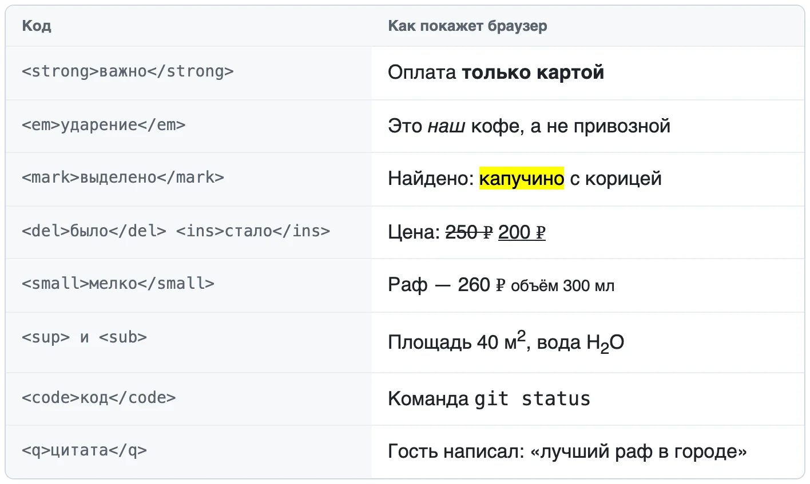
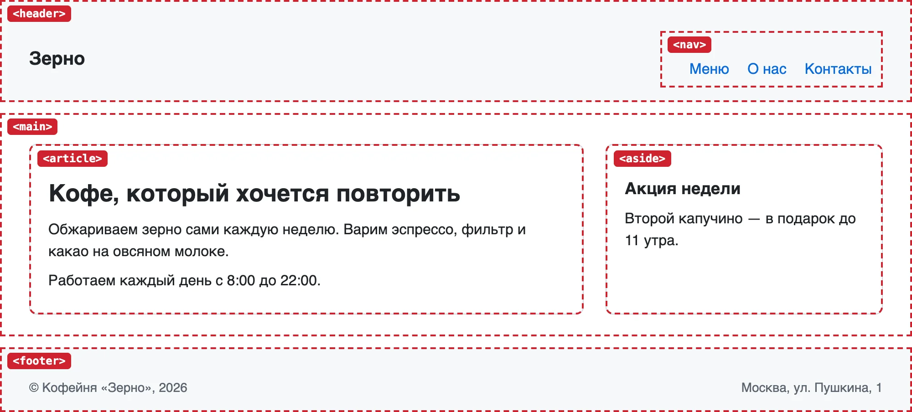
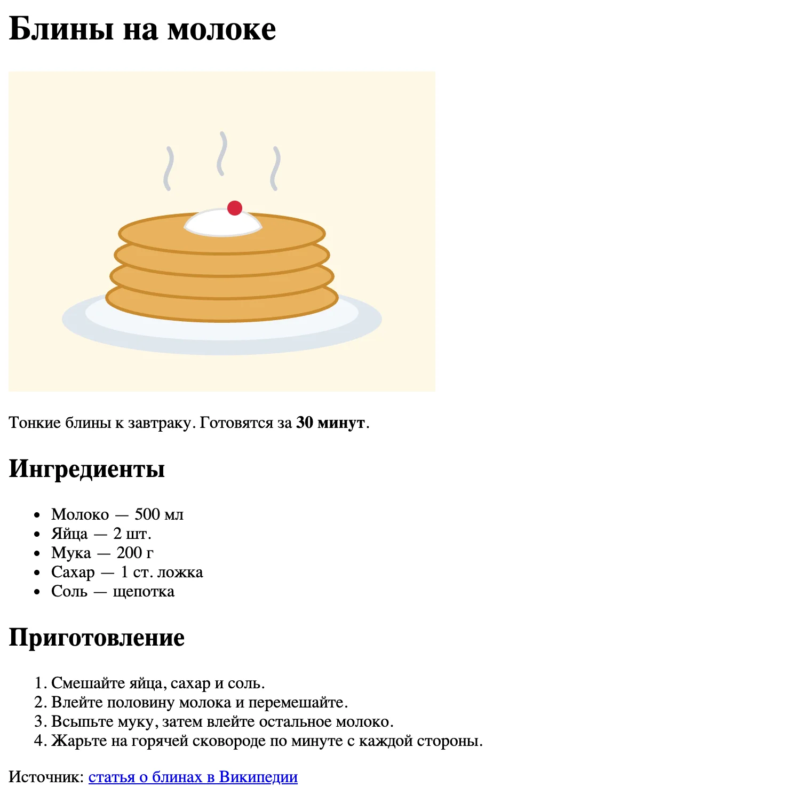

HTML — основа страницы
Документ, теги, семантика
После урока вы сможете
- Собрать HTML-страницу с правильным каркасом
- Размечать текст заголовками, абзацами и списками
- Добавлять ссылки и картинки с правильными путями
- Выбирать семантические теги вместо безликих div
Урок за минуту
- HTML описывает, что есть на странице. Как это выглядит — задача CSS
- Элемент — это открывающий тег, содержимое и закрывающий тег. Атрибуты уточняют тег
- Каркас страницы:
<!doctype html>,<html lang="ru">,<head>для служебного,<body>для видимого - Ссылка —
<a href>, картинка —<img src alt>. Пути работают как в Терминале - Семантическая разметка:
header,nav,main,footerпонятнее людям, поисковикам и программам экранного доступа
Что такое HTML
HTML — язык разметки. Вы берёте обычный текст и помечаете: вот заголовок, вот абзац, вот список. Браузер читает пометки и строит страницу.
Попробуйте: слева — разметка, справа — что показывает браузер. Уберите теги у списка — браузер склеит пункты в одну строку.
HTML не отвечает за цвета, шрифты и расположение — это CSS (урок 6). HTML отвечает только за смысл и порядок.
Анатомия тега
Почти всё в HTML — элементы: открывающий тег, содержимое, закрывающий тег. Атрибуты пишутся внутри открывающего тега и уточняют его.
<a href="about.html"></a>Атрибут записывается как имя="значение". У одного тега может быть несколько атрибутов через пробел:
<a href="https://ya.ru" target="_blank">Яндекс</a>
<img src="img/logo.png" alt="Логотип кофейни">У некоторых тегов нет содержимого и закрывающего тега: <img>, <br>, <meta>, <link>, <input>.
Вложенность. Элементы вкладываются друг в друга, как коробки: что открыли последним — закрываем первым.
Правильно
<p>Кофе <strong>очень</strong> горячий</p>Неправильно: теги перекрещиваются
<p>Кофе <strong>очень</p> горячий</strong>Каркас страницы
Каждая страница начинается одинаково. Этот каркас Emmet вставляет по ! и Tab (урок 3):
<!doctype html> <!-- это HTML-документ современного стандарта -->
<html lang="ru"> <!-- корень страницы, язык — русский -->
<head> <!-- служебное: на странице не видно -->
<meta charset="utf-8"> <!-- кодировка: чтобы кириллица не превратилась в «кракозябры» -->
<meta name="viewport" content="width=device-width, initial-scale=1.0"> <!-- для телефонов -->
<title>Кофейня «Зерно»</title> <!-- текст на вкладке браузера -->
</head>
<body> <!-- всё, что видно на странице -->
<h1>Кофейня «Зерно»</h1>
</body>
</html>- html/
lang="ru"- head/служебное
- metacharset
- metaviewport
- titleтекст вкладки
- body/видимое
- h1
- p
- head/служебное
Язык страницы
Emmet ставит lang="en". Поменяйте на lang="ru": так программы экранного доступа читают текст с правильным произношением, а Biome перестанет напоминать об ошибке.
Что ещё кладут в head
В <head> лежит всё, что не видно на странице, но нужно браузеру и поисковикам. Каркас Emmet даёт первые три строки, остальные добавляют сами:
<head>
<meta charset="utf-8">
<meta name="viewport" content="width=device-width, initial-scale=1.0">
<title>Кофейня «Зерно» — кофе на Лесной</title>
<meta name="description" content="Кофейня у метро Белорусская: свежая обжарка, завтраки с 8 утра.">
<link rel="icon" href="favicon.svg">
</head>| Строка | Зачем |
|---|---|
charset |
Кодировка. Без неё кириллица превращается в «кракозябры» |
viewport |
Страница под ширину телефона, подробно — в уроке 8 |
<title> |
Текст вкладки и заголовок в поисковой выдаче |
description |
Описание под заголовком в поисковой выдаче. Одно-два предложения |
<link rel="icon"> |
Значок на вкладке — favicon. Удобнее всего SVG |
Позже здесь же появится <link rel="stylesheet"> — подключение стилей из урока 6.
Заголовки и абзацы
Заголовки бывают шести уровней: от <h1> до <h6>. Уровень выбирают по смыслу, как в оглавлении книги, а не по размеру шрифта: размер настроим в CSS.
- h1/Рецепт блинов
- h2Ингредиенты
- h2/Приготовление
- h3Тесто
- h3Жарка
| Тег | Смысл |
|---|---|
<h1> |
Главный заголовок страницы. Один на страницу |
<h2>–<h6> |
Подзаголовки: разделы, подразделы |
<p> |
Абзац |
<strong> |
Важное, по умолчанию жирное |
<em> |
Смысловое ударение, по умолчанию курсив |
<br> |
Перенос строки внутри абзаца. Нужен редко: в адресах и стихах |
<hr> |
Смысловой разрыв между частями текста, по умолчанию — линия |
Выделение в тексте
Внутри абзаца отдельные слова тоже можно разметить. Каждый тег сообщает, зачем слово выделено, а браузер показывает это по-своему:

Есть пары, которые выглядят одинаково: <strong> и <b> — жирный, <em> и <i> — курсив. Разница в смысле. strong — «это важно», программа экранного доступа выделит его голосом. b — просто жирный без смысла. Берите strong и em, а просто жирный или курсив для красоты делайте в CSS.
Специальные символы. Знаки < и > браузер считает началом тега. Чтобы показать их как текст, пишут коды:
| Код | Символ | Когда |
|---|---|---|
< > |
< > | показать тег как текст |
& |
& | сам амперсанд |
|
неразрывный пробел | 100 ₽ — число и рубль не разорвутся по строкам |
Кавычки «ёлочки», тире и ₽ пишите прямо: кодировка utf-8 их понимает.
Списки
Два вида списков: маркированный <ul> — порядок не важен, нумерованный <ol> — порядок важен. Каждый пункт — <li>. Внутри пункта может быть другой список.
Третий вид — список определений <dl>: пары «термин — описание». Подходит для глоссария, характеристик товара, меню с описаниями.
<dl>
<dt>Эспрессо</dt>
<dd>30 мл крепкого кофе</dd>
<dt>Раф</dt>
<dd>Эспрессо, сливки и ванильный сахар</dd>
</dl>dt — термин, dd — описание. У одного термина может быть несколько dd.
Ссылки
Ссылка — тег <a> с атрибутом href: куда вести.
<a href="https://developer.mozilla.org">MDN</a> <!-- другой сайт: полный адрес -->
<a href="about.html">О нас</a> <!-- страница вашего сайта -->
<a href="#contacts">Контакты</a> <!-- место на этой же странице -->
<a href="mailto:hello@zerno.ru">Напишите нам</a> <!-- письмо -->
<a href="tel:+79990000000">Позвонить</a> <!-- звонок с телефона -->Внешнюю ссылку можно открыть в новой вкладке: target="_blank". Добавляйте к нему rel="noopener" — это защищает вашу страницу от чужой.
Ссылка #contacts ведёт к элементу с атрибутом id="contacts" на той же странице. Так делают оглавления.
Пути к файлам
Пути в href и src работают как в Терминале (урок 2): от текущего файла. Пусть сайт устроен так:
- zerno/
- index.htmlпишем ссылки отсюда
- about.html
href="about.html" - img/
- logo.png
src="img/logo.png"
- logo.png
- menu/
- coffee.html
href="menu/coffee.html"
- coffee.html
А из menu/coffee.html путь к логотипу другой: сначала подняться на уровень выше — ../img/logo.png.
Абсолютный путь с вашего компьютера
src="/Users/mary/dev/zerno/img/logo.png" работает только на вашем Mac. У всех остальных — и на GitHub Pages — картинки не будет. Пишите пути от текущего файла.
Картинки
Картинка — тег <img>: src — путь к файлу, alt — описание.
<img src="img/pancakes.jpg" alt="Стопка блинов со сметаной" width="400" height="300">Альтернативный текст в alt читают программы экранного доступа. Его же браузер показывает, если картинка не загрузилась. Пишите, что изображено, коротко и по делу:
| alt | Оценка |
|---|---|
alt="Стопка блинов со сметаной" |
хорошо: понятно без картинки |
alt="картинка" |
плохо: ничего не сообщает |
alt="" |
правильно для чисто декоративной картинки |
без alt |
ошибка: Biome подчеркнёт |
| Формат | Для чего |
|---|---|
.jpg |
Фотографии |
.png |
Картинки с прозрачностью, скриншоты |
.svg |
Логотипы и иконки: чёткие при любом размере |
.webp |
Современная замена jpg и png, весит меньше |
Картинку с подписью оборачивают в <figure>, а подпись кладут в <figcaption>. Так браузер и программы экранного доступа понимают, что подпись относится к этой картинке:
<figure>
<img src="img/latte.jpg" alt="Латте с рисунком в виде листа">
<figcaption>Латте-арт от бариста Анны</figcaption>
</figure>Logo.PNG и logo.png — разные файлы
На вашем Mac регистр букв в именах файлов не важен, а на сервере, например на GitHub Pages, — важен. Картинка, которая работает у вас, пропадёт после публикации. Называйте файлы маленькими латинскими буквами без пробелов: hero-image.jpg.
Раскрывающийся блок и встроенная страница
<details> — блок, который открывается по щелчку. <summary> — видимая часть. Годится для частых вопросов и подсказок. JavaScript не нужен.
Атрибут open открывает блок сразу. Щёлкните по вопросам — они сворачиваются и разворачиваются.
<iframe> — окно с другой страницей внутри вашей. Так вставляют карту, видео с YouTube или VK Видео. Код обычно даёт сам сервис кнопкой «Поделиться → Встроить»:
<iframe src="https://yandex.ru/map-widget/v1/?ll=37.58,55.77&z=16"
width="600" height="400" title="Кофейня на карте" loading="lazy"></iframe>title описывает, что внутри окна, — для программ экранного доступа. loading="lazy" — грузить, только когда окно доскроллили.
Семантическая разметка
Семантические теги делят страницу на части по смыслу. Выглядят они как обычные блоки, но браузер, поисковик и программа экранного доступа понимают, где шапка, где меню, а где основное содержимое.

<body>
<header>
<strong>Зерно</strong>
<nav>
<a href="menu.html">Меню</a>
<a href="about.html">О нас</a>
</nav>
</header>
<main>
<article>
<h1>Кофе, который хочется повторить</h1>
<p>Обжариваем зерно сами каждую неделю.</p>
</article>
<aside>Акция недели</aside>
</main>
<footer>© Кофейня «Зерно», 2026</footer>
</body>| Тег | Что внутри |
|---|---|
<header> |
Шапка: логотип, название, иногда меню |
<nav> |
Главная навигация — набор ссылок |
<main> |
Основное содержимое. Один на страницу |
<section> |
Раздел с собственным заголовком |
<article> |
Самостоятельный материал: статья, карточка товара, пост |
<aside> |
Дополнительное: боковая колонка, врезка |
<footer> |
Подвал: контакты, копирайт |
<address> |
Контакты: адрес, телефон, почта. Обычно в подвале |
<div> и <span> |
Безликие контейнеры, когда подходящего по смыслу тега нет |
Как выбрать тег
Спросите себя, как бы вы назвали этот кусок страницы вслух. «Шапка» — header. «Меню» — nav. «Просто обёртка, чтобы покрасить» — div.
section или article? Мысленно вырежьте кусок и перенесите на другой сайт. Понятен сам по себе — пост, отзыв, карточка товара — это article. Имеет смысл только на этой странице, как раздел «Меню» внутри лендинга, — section. В обоих случаях внутри должен быть заголовок.
Как проверить свою разметку
Три инструмента вы уже знаете:
- Biome в VS Code подчеркнёт
altбез описания, пропущенныйlang, пустые ссылки. То же покажет команда в терминале:
mary@MacBook-Air homework % npx biome check 04-html-basics/task-104-html-basics/task-1/index.html:9:5 lint/a11y/useAltText× Provide a text alternative through the alt, aria-label, or aria-labelledby attribute. > 9 │ <img src="img/pancakes.svg">
- DevTools → Elements (⌥+⌘+I) покажет дерево, которое построил браузер. Если тег не закрыт, дерево будет не таким, как вы ожидали.
- Проверки на странице в домашних заданиях: плашка в правом нижнем углу.
Частые ошибки
Заголовок выбран по размеру
<h3> вместо <h2>, потому что «так меньше». Уровень — это смысл, размер поменяем в CSS.
Всё на div
<div class="header"> вместо <header>. Работает, но программы экранного доступа и поисковики не поймут структуру.
Текст вне тегов
Текст прямо в <body> или в <ul> без <li>. Браузер покажет, но разметка сломана. Каждый кусок текста — внутри подходящего тега.
Шпаргалка
| Задача | Тег |
|---|---|
| Главный заголовок | <h1> |
| Подзаголовок | <h2>…<h6> |
| Абзац | <p> |
| Важное / ударение | <strong> / <em> |
| Список без порядка / по порядку | <ul> / <ol> + <li> |
| Ссылка | <a href="…"> |
| Картинка / с подписью | <img src="…" alt="…"> / <figure> + <figcaption> |
| Раскрывающийся блок | <details> + <summary> |
| Шапка / меню / подвал | <header> / <nav> / <footer> |
| Основное / раздел / материал | <main> / <section> / <article> |
| Обёртка без смысла | <div>, <span> в строке |
Квиз
- 1. За что отвечает HTML?HTML говорит, что на странице есть. Внешний вид — CSS, поведение — JavaScript.
- 2. Что в
<a href="about.html">О нас</a>является атрибутом?Атрибут — имя и значение внутри открывающего тега.a— имя тега, «О нас» — содержимое. - 3. Где на странице будет виден текст из
<title>?<title>лежит в<head>— служебной части. На самой странице он не показывается. - 4. Сколько
<h1>должно быть на странице?h1 — главный заголовок страницы. Разделы ниже размечают h2–h6. - 5. Какой список подходит для шагов рецепта?В рецепте порядок важен, поэтому нумерованный список ol. Номера браузер поставит сам.
- 6. Файл
menu/coffee.htmlссылается на картинкуimg/logo.pngв корне сайта. Какой путь верный?Из папки menu нужно подняться на уровень выше:.., а затем зайти в img. - 7. Какой alt лучше для фотографии блинов в рецепте?alt должен объяснять, что на картинке, человеку, который её не видит.
- 8. Чем
<strong>отличается от<b>?Выглядят одинаково, но strong несёт смысл, и программа экранного доступа его подчеркнёт. Для жирного «для красоты» есть CSS. - 9. Каким тегом разметить главное меню сайта?nav — семантический тег для основной навигации. div не несёт смысла, menu-list не существует.
- 10. Картинка видна на вашем Mac, но пропала на GitHub Pages. Файл называется
Logo.PNG, в коде —logo.png. Почему?macOS не различает регистр в именах файлов, а серверы различают. Называйте файлы строчными буквами.
Задания
Страница-рецепт
Откройте homework/04-html-basics/task-1/index.html. Картинка img/pancakes.svg уже лежит в папке. Сверстайте страницу рецепта:
Перетащите картинку сюда, вставьте из буфера ⌘+V или
- Язык страницы — русский, в
<title>— название рецепта - Один заголовок
h1с названием рецепта - Картинка с понятным
alt - Раздел «Ингредиенты» с заголовком
h2и маркированным списком, минимум 4 пункта - Раздел «Приготовление» с заголовком
h2и нумерованным списком, минимум 4 шага - Ссылка на источник рецепта, которая открывается в новой вкладке
- Плашка проверок: всё пройдено, Biome ошибок не показывает

Сайт из трёх страниц
В папке task-2 сделайте маленький сайт своей кофейни или студии: index.html, about.html, contacts.html и папка img с логотипом.
Перетащите картинку сюда, вставьте из буфера ⌘+V или
- На каждой странице одинаковая шапка
headerс логотипом и менюnavиз трёх ссылок - Ссылки ведут на страницы сайта относительными путями
- На каждой странице свой
h1иmainс содержимым, внизуfooter - На странице «Контакты» — ссылки
mailto:иtel: - Переход по всем ссылкам работает через Live Server
- Плашка проверок на
index.html: всё пройдено
Из div-супа в семантику
В task-3/index.html страница размечена одними div с классами header, menu, content, footer. Замените их на подходящие семантические теги. Внешне страница не должна измениться.
- Плашка проверок: всё пройдено
- Своими словами: почему
<nav>лучше<div class="menu">
Страница о себе
Сверстайте страницу-визитку в task-4/index.html: кто вы, чем занимались до курса, чему учитесь, как связаться. Используйте семантические теги, заголовки по уровням, хотя бы один список, картинку с alt и ссылки. Стилей пока не нужно.
Перетащите картинку сюда, вставьте из буфера ⌘+V или
- Структура заголовков: один
h1, разделы сh2 - Не меньше пяти разных семантических тегов
-
npx biome check 04-html-basics/task-4— без ошибок - Показали страницу ментору и объяснили выбор каждого тега
Ответы из полей выше сохраняются в этом браузере сами — можно закрыть страницу и вернуться. Когда закончите, сформируйте отчёт и отправьте архив ментору.
Ответы хранятся отдельно для каждого способа открыть курс: файлом, через npm start или по ссылке на GitHub Pages. Открывайте курс всегда одинаково.